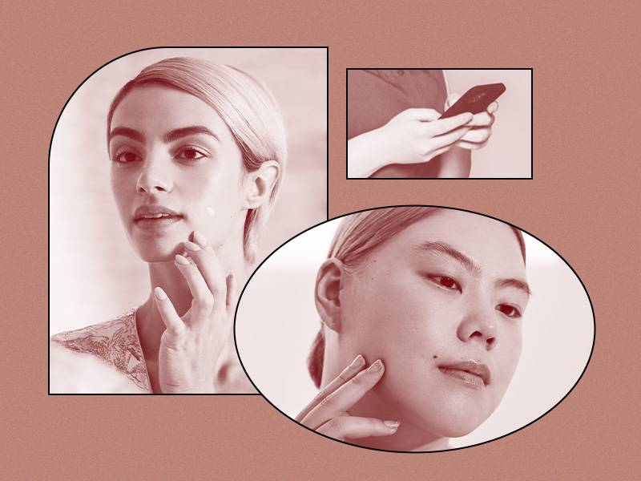

Derm DMs: Why Does Redness Linger After a Pimple Is Gone?
27-3-2022
I’ll admit that, even against my better judgment, I’m one to pick, prod and pop my pimples. As a result, the area tends to get inflamed, irritated and really red. The rosy color is to be expected while my pimple is still filled with pus, but why does the bright red color linger on my skin so long after the zit has been popped? To find out why my skin remains visibly red long after the pimple has seemingly healed, I turned to Dr. Alicia Zalka, a Connecticut-based board-certified dermatologist and founder of skincare brand Surface Deep, and Dr. Morgan Rabach, New York City-based board-certified dermatologist, to share why redness occurs, why it lingers and how to reduce its appearance.
If you’ve ever had a cystic pimple, pustule, papule or whitehead, you’re likely all too familiar with the redness that comes with them. It turns out that redness is a byproduct of inflammation in the skin. The more inflamed your pimple is, the redder it will appear. “The degree of inflammation can be due to bacteria, skin trauma, and to some degree, androgen type hormone activity on the skin receptors,” says Dr. Zalka. “Too much handling of the skin, like squeezing the pimple, invites a skin response that can prolong the inflammatory phase.”
Dr. Rabach adds that this picking and prodding can introduce oil, dirt and other debris onto the skin’s surface, which as a result increases the look of redness. “The pimple will appear red if a little material leaks out of the skin, which leads to inflammatory cells coming to the area to fight the debris,” she says. “The redness comes from blood vessels dilating or opening up to let white blood cells, the ones that fight infection, into the area.”
Popping the pus out of your pustule or using spot treatments to shrink your cyst may help flatten your pimple, but redness can linger long after your pimple has disappeared. “Redness can remain on your skin anywhere from one week to three months or more depending on how inflamed the skin was,” says Dr. Zalka. “It’s a discoloration known in dermatologic terms as post-inflammatory erythema if it’s red, or post-inflammatory pigmentation if it’s brown. It’s the skin trying to repair itself after the battle ground of the pimple declares a cease fire.”
The duration of your pimple’s redness is due to a variety of factors. According to Dr. Rabach, it can be impacted by your skin color, skin type, skincare regimen, genetics and the size and depth of inflammation from your former pimple. For example, small, superficial pustules will resolve faster, while larger, deeper cystic pimples often take longer. Redness and pigmentation are also heavily impacted by the level of irritation inflicted. She explains that if you picked, prodded and introduced bacteria into the pimple, you’ll likely have more leftover pigmentation. “The white blood cells that were called into the area let off a stress signal to the surrounding area,” says Dr. Rabach. “When this happens, melanin, or little blocks of pigment, in the cells is released as a byproduct of the stress signal.” Because pigment was dropped out of the cell, it creates a visible mark that is darker than the surrounding skin even after the bump has disappeared.
While there’s no sure-fire way to remove redness altogether, covering any blemishes with a pimple patch can help you avoid aggravating the spot. This will provide a barrier to prevent you from touching any zits and assist in flattening them out. If you do end up prodding your pimples, try using the Kiehl’s Cannabis Sativa Seed Oil Herbal Concentrate — cannabis sativa seed oil is a soothing agent that is known to aid in reducing redness. You should also wash your face with an acne-fighting cleanser. We like the CeraVe Acne Foaming Cleanser because it is formulated with benzoyl peroxide to help clear and prevent new pimples from forming, and hyaluronic acid, which helps the skin retain moisture so your face doesn’t feel dried out. If you already have a cleanser you love, try incorporating a salicylic acid serum into your routine. The IT Cosmetics Bye Bye Breakout Salicylic Acid Acne Serum visibly reduces existing acne and post-acne marks.